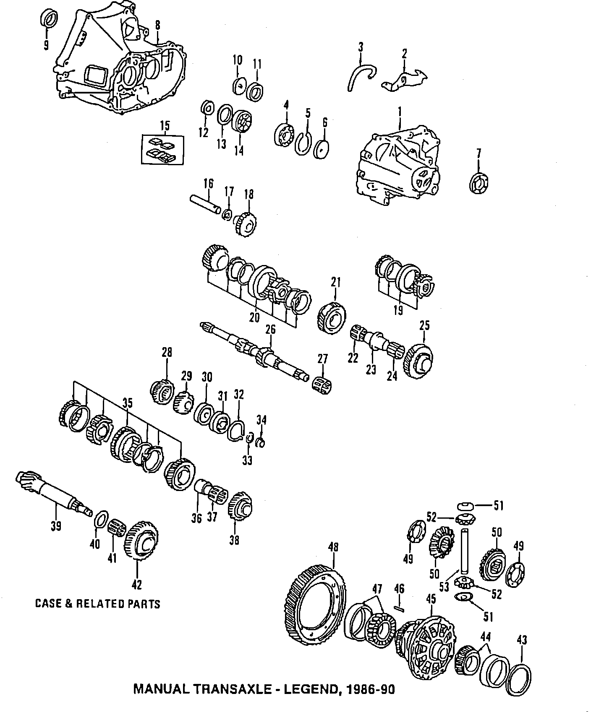

Operation CHARM
: Car repair manuals for everyone.
Home
>>
Acura
>>
1990
>>
Legend Sedan V6-2675cc 2.7L SOHC FI
>>
Parts and Labor
>>
Transmission and Drivetrain
>>
Manual Transmission/Transaxle
>>
Images
Images
Case & Related Parts:
